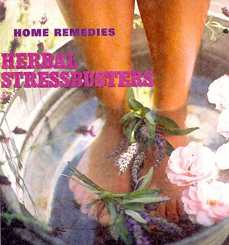
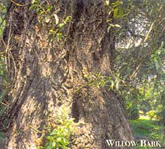
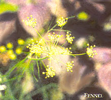
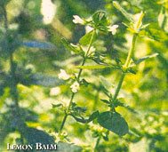
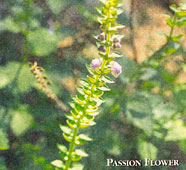

Herbal Stressbusters
October/November 2000
Age-old remedies for stress.
by Dr. Sharon L. Hagemann NMD, DO
Love, Laugh, Let Go. Putting too much pressure on yourself only creates more tension. Don't judge yourself too harshly, or expect more of yourself than you expect of others. Instead, accept yourself and your faults. Research demonstrates that those who take things in stride have higher self-esteem and less stress - which translates into better health.
Research into the physiological effects of stress has revealed a series of reactions known collectively as the General Adaptation Syndrome. Alarm reaction, the response that first occurs when you're faced with a perceived emotional or physical threat, results in a rise in blood pressure, an increased heartbeat, and a general mobilization of your body's defensive forces.
The alarm reaction stage is followed by the resistance stage, which comes when you've adapted to the threat and your symptoms - sweaty palms, clenched jaw - begin to improve or disappear. Luckily, most physical and emotional stress situations are contained within these two stages. However, a third response, known as the exhaustion stage, will set in if you regularly feel anxious over a prolonged period of time. A constant battle with stress will cause alarm reaction symptoms to reappear. If the stress continues unabated, health problems such as hypertension, chronic anxiety and even heart attack can ensue.
Mountains Out of Molehills
An obvious and daunting fact about stress is that it has less to do with external factors (your car breaking clown, your kids bickering) than with your very conscious reaction to these events. In other words, we are in charge of our own stress levels.
Different situations trigger stress in different people. For instance, your co-worker might cringe at the thought of giving a lecture in front of a large audience, while you might jump at the chance. Likewise, one person will relish an active schedule full of challenges, while another will prefer quieter, more predictable pursuits. Switch these two types of people and each would feel stressed in the other one's shoes.
Another fact we often overlook is that stress can come from good occasions as well as bad ones. Even happy events such as a wedding, a promotion or the birth of a new baby can prove stressful. The anticipation and excitement of added responsibility that comes with positive growth and change can cause just as many migraine headaches and stomach jitters as a bad event, such as a tax audit. Again, the way the situation affects your health and well-being depends largely on how you react.
Modify your responses to life's events and you'll feel more calm and in control, even though applying the brakes, taking a deep breath and getting centered as the rest of the world accelerates is much easier said than done. With a little practice, though, you can do it - and you'll appreciate your newfound sense of calm the next time you're faced with a crisis. Try these simple, everyday stress-reducing habits I've included here. I recommend these tips to patients who find their lives getting out of control. If these tips work well for you, you might consider deepening your relaxation response by using mind-body techniques such as yoga and meditation.
Create Your Own Rituals. Savor a cup of chamomile tea in the late afternoon. Light some jasmine incense and a candle during bathtime. Making space in your schedule,for simple rituals can go along way in easing stress. No matter how hectic life may be, you'll find comfort in knowing that at least some things remain sacred.
H erbal treatments can also help balance body and soul. Some of these plants target physical ailments, while others address psychological concerns. For example, if you are under extreme pressure, your heart races and you feel short of breath, you might find relief in motherwort, a natural tranquilizer. If stress ties you in knots and nauseates you, try fennel or lemon balm. Tense, sore muscles generally respond favorably to cramp bark. Feverfew and willow bark work well for migraine and tension headaches. If it's sleep that's eluding you, passion flower or scullcap might just do the trick. And should you find yourself stressed out and depressed, reach for St. John's Wort, a natural antidepressant.
The following, in a nutshell, is information on some popular and effective herbal stress-relievers.
Get Silly. Laughter increases blood flow to the brain, raises endorphin levels, and lowers levels of stress hormones. Plus, doing it just feels great. When you're feeling down, call up a friend who never fails to make you laugh. It really is the best medicine.
Although all of these herbs are safe, you may wish to confer with a qualified herbalist or natural health care provider to see which ones are best suited to your particular needs and situation. He or she may also have additional suggestions to help you deal with long-term stress in your life.
THE HERBS CRAMP BARK (Viburnum opulus) While commonly called "high cranberry," this plant is in no sense related to the edible cran berry fit belongs to the elder family). Cramp bark acts as a muscle relaxant, making it beneficial for elite athletes and hardworking gardeners alike.
Preparation: Recommended in extract form (40 drops, four times per day). It usually works within 30 minutes.
R eap Your Rewards. Rewards for your hard work needn't be expensive - just something - pleasurable to look forward to. Buy yourself some flowers or take a garden stroll at the end of a long day. Or celebrate your job promotion at the ice cream parlor with friends.
FENNEL(Foeniculum vulgare)
A favorite in the herbal healing arena from the time of the pharaohs to the present day, fennel gently relieves gastrointestinal upsets, flatulence, abdominal tension and colic.
Preparation: Take in capsule form (one to three times daily) or by extract (40 drops after meals). You'll notice relief from gas or nausea within half an hour of ingestion.
Note. Since, fennel has an estrogenic effect, women advised by their doctors not to take birth control pills should avoid the herb in medicinal amounts.
FEVERFEW(Chrysanthemum parthenium)
This ancient herb had all but fallen out of use until the late 1970s, when scientific trials established its validity as a "modern miracle" for the relief of migraine headaches.
Preparation: Take three capsules, three times daily. Serious migraine sufferers may find it takes several months to achieve maximum effectiveness.
Note: Some people develop mouth sores and nausea using, feverfew. It should also be avoided during pregnancy.
Make Time For Meals. Eating at your desk or on-the-go is a ready-made recipe. for heartburn and mental fatigue. Take time out to nourish and replenish your body, no matter how long your to-do list might be that day.
LEMON BALM(Melissa officinalis)
Medieval Europeans used lemon balm to allay nervousness and anxiety. More recently, researchers have discovered that lemon balm oil appears to have mild tranquilizing properties, substantiating its use as a mild sedative.
Preparation: Make an infusion by steeping two teaspoons of the herb in eight ounces of water in a covered container for 20 minutes. Administer up to four times per day. The effects are cumulative and should be felt after a week's worth of treatment.
Learn from Children "Take five" and watch some small children at play. They're enjoying the moment and aren't worried about the past or future. Try following their example.
MOTHERWORT (Leonorus cardiaca )
The ancient Greeks and Romans prescribed motherwort for both palpitations and depression. Contemporary herbalists recognize its use as a mild sedative and anxiety-reducer.
Preparation: I recommend a tincture, because the herb is extremely bitter. Take one-half to one teaspoon, twice a day (effective within a week). Severe anxiety responds best to regular use over a one-month period.
Note: Motherwort has been shown to suppress thyroid function in large doses.
Find A Hobby. Do something purely for the fun of it. Gather coins from foreign lands, make scented candles, or put on a pair of cross-country skis and see where they take you. Indulge in something that makes your heart sing.
PASSION FLOWER(Passiflora incarnata)
Documented as a tran quilizer and sedative in the National Formulary from 1916-1936, passion flower acts as a gentle tranquilizer, pain reliever and digestive aid.
Preparation: For a relaxing, sleep-inducing infusion, steep one teaspoon of leaves in a cup of boiling water for 15 minutes. Take one cup at bedtime for insomnia. For general relaxation, try sipping up to three cups a day.
Note: Passion flower is generally considered safe, although extremely large doses may cause nausea and/or vomiting in some individuals.
Set Priorities. Devote some time to think about your life goals. List your goals for the year, the week and the day. This should give you a good idea of what you are really seeking. Always go after the important things first, and be open to the fact that your goals may evolve over time.
ST. JOHN'S WORT(Hypericum perforatum)
In the Middle Ages, legend stated that this red-relined plant sprang from the blood of John the Baptist when he was beheaded. Therefore, it was often blessed by a priest and worn around the neck to ward off disease and temptation. Today St. John's Wort is used to relieve anxiety and restore emotional stability. Its active component, hypericin, combats depression in the higher centers of the brain. It is of particular use to those with chronic anxiety, or to individuals who suffer from panic attacks.
Preparation: Take 20 to 30 drops of standardized extract, four times a day. It is a slow but enduring tranquilizer that must be used an average of ten days before effects are noted.
Note: This herb can have photo-sensitizing effect for some users. Avoid exposure to sun during a course of treatment, as sunburn will quickly result. Also, contact your health care provider before taking if you already take prescription antidepressants.
SCULLCAP (Scutellaria lateriflora)
Eclectic American physicians of the 19th century rec ommended scullcap as a tranquilizer and sedative for insomnia and nervousness. It relieves mood swings, sleeping disorders, nervous tension and stress-related headaches.
Preparation: Take 30 to 40 drops of fresh plant tincture in juice or tea up to four times a day. Scullcap works over a period of several weeks.
Note: While there have been no reports of toxicity, large amounts of tincture may result in confusion, twitching and convulsions.
WILLOW BARK(Salix alba)
Yet another time-tested "herbal aspirin" (in fact, the original ingredient in commercial aspirin), white willow bark is greatly effective in relieving head pain, particularly tension headaches. It also reduces fever and inflammations.
Write It Down. Putting pen to paper can be healthy and cathartic, and reading over what you have written often helps put things into perspective. If stress has you losing sleep, jot down your worries in a notebook before going to bed. Let them go, and you won't feel the need to process them all night in your head.
Preparation: Gently boil two teaspoons of herb in eight ounces of water for 15 minutes. Remove from heat, cover and steep for an additional 30 minutes; take up to three cups a day. Or take three capsules three times a day. Willow bark's effects can generally be felt within two to three hours.
Note: Willow bark contains tannin, which can cause constipation.
For more Herbal Remedies stories, PLUS expanded bulletin boards and article archives, log on to www.motherearthnews.com and read MOTHER in cyberspace today!
|
 |
|
 |
|
 |
 |
 |
|
 |
|
|